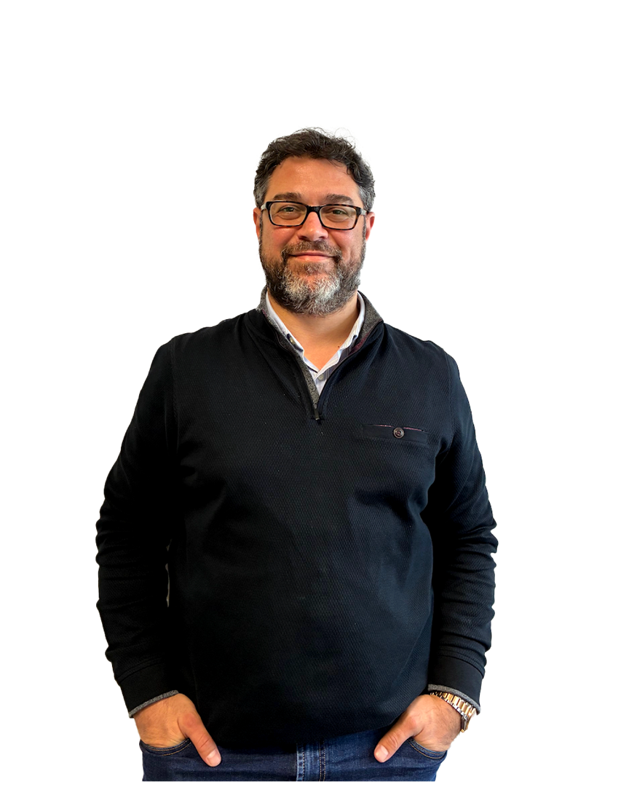
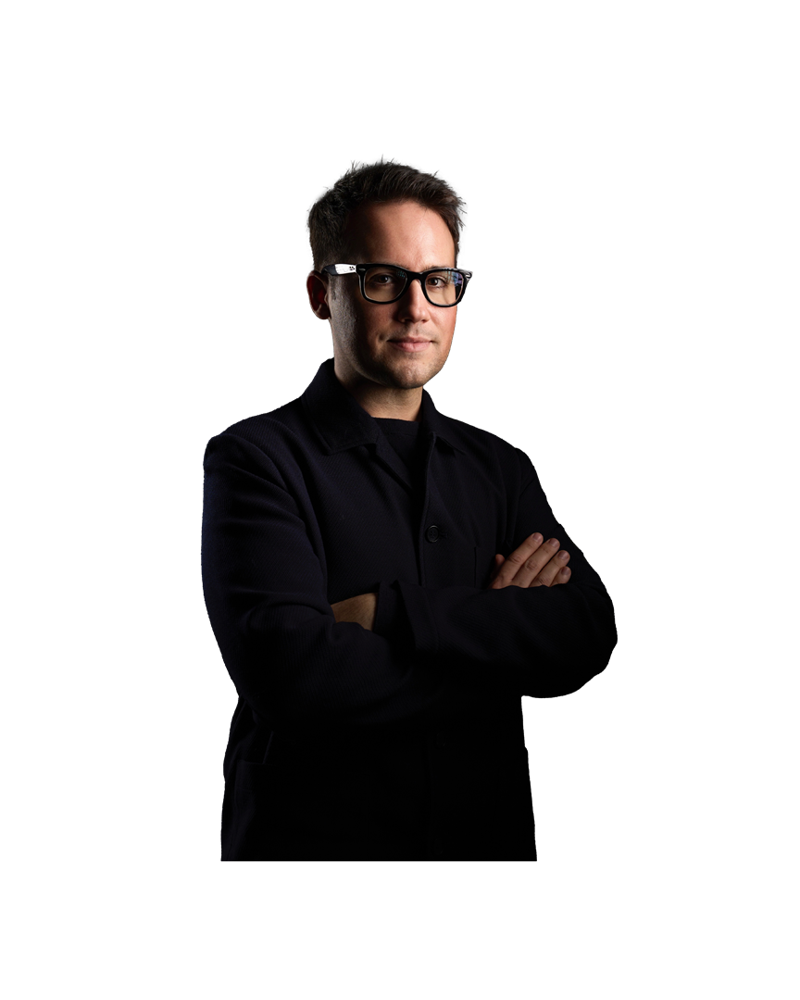
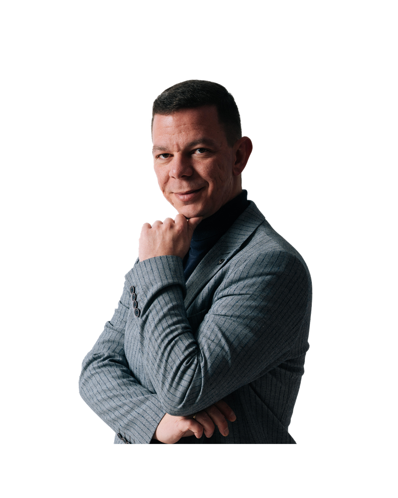
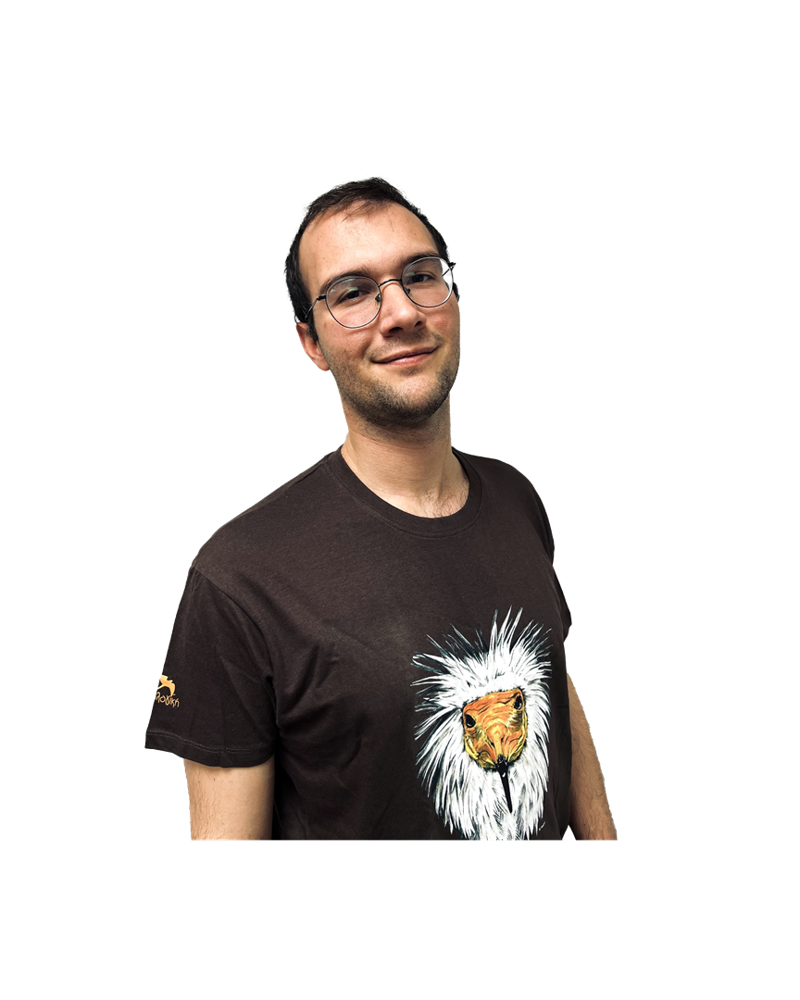
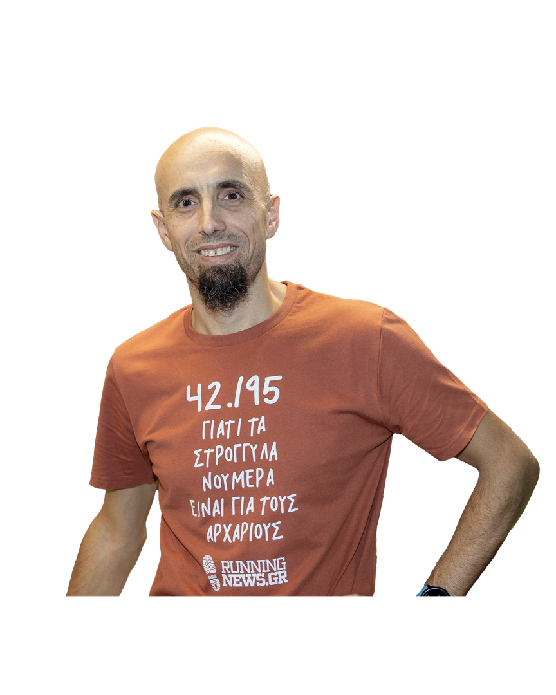
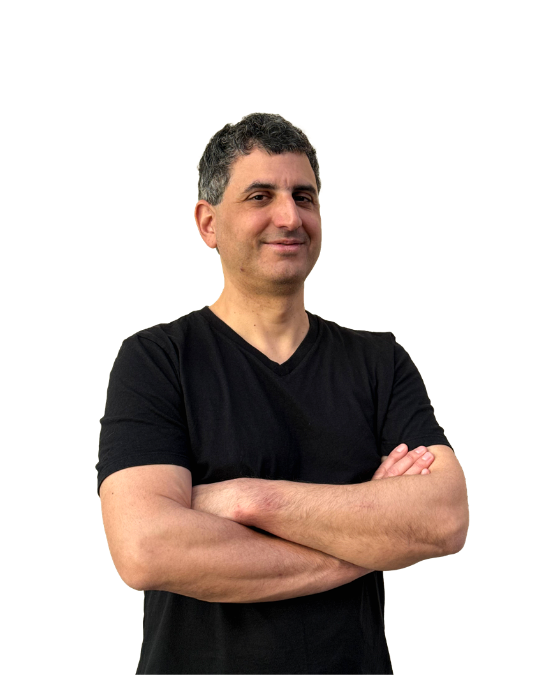
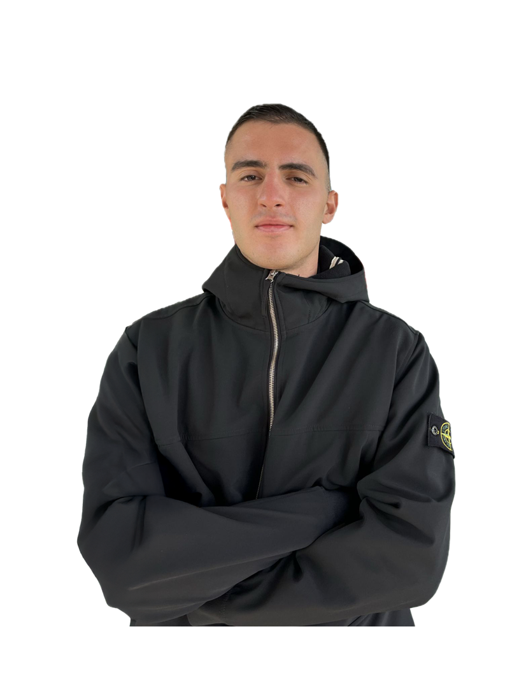
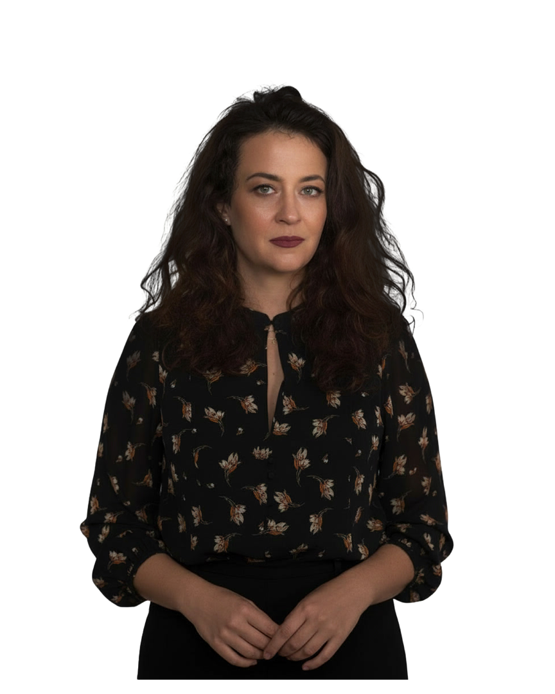
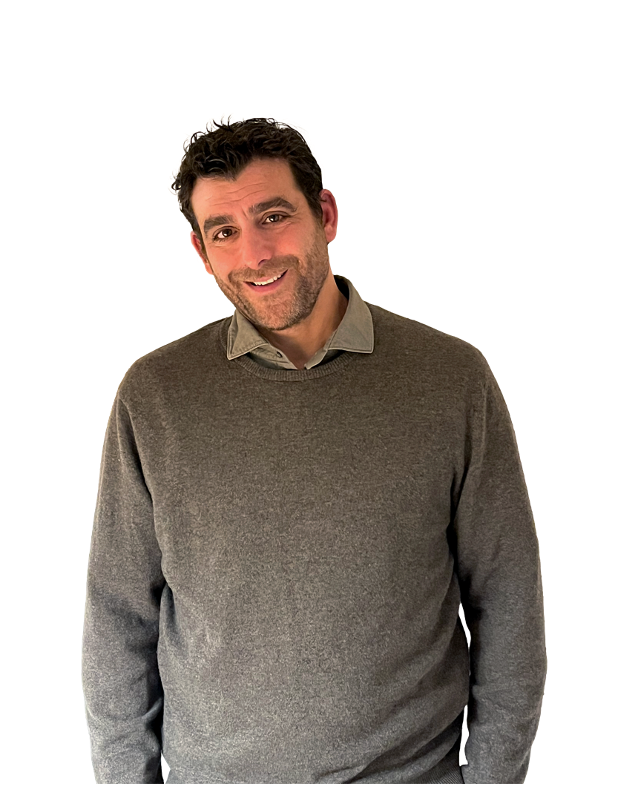

Sotirios Zarogiannis
Professor of Physiology, chair of dept. of physiology faculty of medicine, UTh
View BioΜε χαρά υποδεχόμαστε στο TEDxAUEB τον Σωτήρη Ζαρογιάννη, Καθηγητή Φυσιολογίας στο Πανεπιστήμιο Θεσσαλίας και διεθνώς αναγνωρισμένο ερευνητή. Με εμπειρία από κορυφαία ιδρύματα όπως το University of California San Francisco, το University of Alabama και το University of Heidelberg, το έργο του εξερευνά τη φυσιολογία των μεσοθηλιακών μεμβρανών, τις επιδράσεις περιβαλλοντικών ρύπων στην αναπνευστική υγεία και τη διεπιστημονική σύνδεση επιστήμης, τεχνολογίας και κοινωνίας. Στη σκηνή του TEDxAUEB μας προσκαλεί σε ένα ταξίδι στο μεταίχμιο της Φυσιολογίας, από αυτό που νομίζαμε ότι ξέραμε για το ανθρώπινο σώμα σε αυτό που μόλις αρχίζουμε να φανταζόμαστε.

George Grammatidis
CCO of ERLAC
View BioΩς Chief Communications Officer στην ERLAC και διακεκριμένος στη λίστα Forbes 30 Under 30, ο Γιώργος Γραμματίδης διαθέτει εμπειρία από την Ελλάδα και τις ΗΠΑ στον χώρο της καινοτομίας και των startups, έχοντας αφιερώσει την καριέρα του στη στρατηγική επικοινωνία και τη δημιουργία ισχυρών διεθνών συνεργασιών. Σήμερα συμμετέχει ενεργά στη στρατηγική ανάπτυξη και το branding της ιστορικήςοικογενειακής βιομηχανίας βερνικιών και χρωμάτων, με έμφαση στην καινοτομία και τη σύγχρονη επιχειρηματικότητα, ενώ παράλληλα συμβάλλει ενεργά στην ανάπτυξη του κλάδου ως Γενικός Γραμματέας στον Σύνδεσμο Βιομηχανιών Χρωμάτων και μέλος της Επιτροπής Ηγεσίας του Ελληνοαμερικανικού Επιμελητηρίου. Στις 7 Μαρτίου, θα μας εμπνεύσει να δούμε το “μεταίχμιο” της ηλικίας μας όχι ως εμπόδιο, αλλά ως το απόλυτο ανταγωνιστικό μας πλεονέκτημα.

Chrystos Kyriakidis
Physicist, author and educational contect creator
View BioΩς Φυσικός, συγγραφέας και δημιουργός του δημοφιλούς καναλιού «It’s Just Physics» με εκατομμύρια προβολές, καθώς και παρουσιαστής της εκπομπής “Ανακαλύπτοντας τον Κόσμο” στην ΕΡΤ, ο Χρήστος Κυριακίδης έχει αφιερώσει την καριέρα του στην επικοινωνία της επιστήμης, μετατρέποντας τη φυσική από μάθημα σε συναρπαστικό τρόπο σκέψης. Μέσα από τη δράση του, ως ιδρυτής του πρώτου εργαστηρίου επιστημών στη Δράμα αλλά και μέσω των εκπαιδευτικών του δράσεων, επιδιώκει να κάνει τη γνώση βιωματική και προσιτή σε όλους, γεφυρώνοντας το χάσμα μεταξύ της ακαδημαϊκής θεωρίας και της καθημερινής εμπειρίας. Στις 7 Μαρτίου, θα ανέβει στη σκηνή του TEDxAUEB για να μας ξεναγήσει στο παράδοξο σύμπαν της κβαντικής φυσικής και να μας αποδείξει πώς η αβεβαιότητα του μικρόκοσμου δεν είναι εμπόδιο, αλλά η ίδια η αρχή της ύπαρξης και της ανθρώπινης πιθανότητας.

George Drosopoulos
Conservation officer, Hellic ornithollogical society (BirdLife Greec)
View BioΩς Υπεύθυνος Δράσεων Διατήρησης στην Ελληνική Ορνιθολογική Εταιρεία, με σπουδές στη Βιολογία και εξειδίκευση στη συμπεριφορά ζώων, ο Γιώργος Δροσόπουλος έχει αφιερώσει την ακαδημαϊκή και επαγγελματική του πορεία στην αποκωδικοποίηση της σχέσης των ζώων με το περιβάλλον τους. Μέσα από τη δράση του, μετατρέπει τη θεωρία της συμπεριφορικής οικολογίας σε πράξη, υλοποιώντας πανευρωπαϊκά προγράμματα για την προστασία των πουλιών και των πολύτιμων βιοτόπων τους. Στις 7 Μαρτίου, έρχεται για να μας ταξιδέψει στο «Μεταίχμιο» της φύσης και να μας εξηγήσει πώς η κατανόηση της συμπεριφοράς των άλλων ειδών είναι το κλειδί για τη δική μας συνύπαρξη με τον πλανήτη.
Persa Koumoutsi
Writer and translator of Arabic and English literature
View BioΓεννημένη στο Κάιρο, η Πέρσα Κουμούτση έχει αφιερώσει τη ζωή της στη λογοτεχνική μετάφραση και τη συγγραφή, λειτουργώντας ως ζωντανή γέφυρα ανάμεσα στην ελληνική και την αραβική κουλτούρα. Με το έργο της, που περιλαμβάνει τη μετάφραση του νομπελίστα Naguib Mahfouz και πλήθος διεθνών διακρίσεων, από τον Έπαινο της Ακαδημίας Αθηνών έως την πρόσφατη παρασημοφόρηση της από την Παλαιστινιακή Αρχή, αποδεικνύει πως η γλώσσα δεν γνωρίζει σύνορα. Μέσα από πρωτοβουλίες της που προάγουν τη σχέση ανάμεσα στην Ελληνική και Αραβική Λογοτεχνία, αλλά και με τη διδακτική της εμπειρία, μετατρέπει τη λογοτεχνία σε εργαλείο κατανόησης του «Άλλου», καταρρίπτοντας στερεότυπα και χτίζοντας ουσιαστικό διαπολιτισμικό διάλογο. Εκείνο το λεπτό σημείο συνάντησης Δύσης και Ανατολής, είναι το “Μεταίχμιο” που θα φέρει στην σκηνή του TEDxAUEB 2026 στις 7 Μαρτίου, όπου οι λέξεις χάνουν την εθνικότητά τους και γίνονται πανανθρώπινες, αποκαλύπτοντας τη δύναμη της μετάφρασης να ενώνει λαούς και ψυχές.

Grigoris Skoularikis
Director of Running News
View BioΩς Διπλωματούχος Ηλεκτρολόγος Μηχανικός και Μηχανικός Η/Υ του ΕΜΠ με ειδίκευση στη Βιοϊατρική, ο Γρηγόρης συνδυάζει την επιστημονική κατάρτιση με το επιχειρηματικό πνεύμα. Είναι ο άνθρωπος πίσω από την πρωτοπόρα ιστοσελίδα «RunningNews.gr», καθώς και ιδρυτής των εταιρειών RUNAWAY, WERUN και athletin.gr, υπηρετώντας τον χώρο του αθλητισμού σε κάθε του έκφανση. Το αθλητικό του ταξίδι είναι πολύ εντυπωσιακό: υπήρξε πρωταθλητής δρόμων αντοχής και διεθνής αθλητής σε Τρίαθλο και Δίαθλο, με συμμετοχές σε Παγκόσμια και Πανευρωπαϊκά Πρωταθλήματα. Ωστόσο, τα τελευταία χρόνια, το πιο σημαντικό του ρεκόρ γράφεται σε έναν άλλο στίβο: αυτόν της συμπερίληψης. Μέσα από τη σταθερή του παρουσία σε αγώνες δρόμου δίπλα στην κόρη του Αγγελική, η οποία έχει σύνδρομο Down, αναδεικνύει έμπρακτα τη δύναμη της ισότιμης συμμετοχής και της αποδοχής. Στις 7 Μαρτίου, έρχεται για να διανύσει μαζί μας το δικό του «Μεταίχμιο»: εκείνο το κρίσιμο σημείο όπου η ατομική επίδοση του πρωταθλητή δίνει τη θέση της στη συλλογική ευθύνη και η γραμμή του τερματισμού γίνεται η αφετηρία για μια κοινωνία χωρίς αποκλεισμούς.

Spyros Staridas
Cartographer
View BioΩς πολυβραβευμένος χαρτογράφος με σπουδές στις γεωεπιστήμες και τις εφαρμοσμένες τέχνες, ο Σπύρος Σταρίδας έχει αφιερώσει την πορεία του στην απόλυτη ισορροπία μεταξύ δεδομένων και εικόνας. Από το 2006, μέσα από το δικό του δημιουργικό γραφείο, μετατρέπει τα γεωγραφικά συστήματα πληροφοριών σε έργα υψηλής αισθητικής και ακρίβειας. Η αγάπη του για το αντικείμενο δεν σταματά στον σχεδιασμό, τη μεταλαμπαδεύει ως δάσκαλος της θεωρίας των χαρτών, αλλά και ως επιμελητής σε χαρτογραφικά περιοδικά παγκόσμιας εμβέλειας. Θα μας οδηγήσει λοιπόν ως προς το ταξίδι, για το δικό του “Μεταίχμιο”: το σημείο όπου η αντικειμενική πραγματικότητα συναντά την απεριόριστη φαντασία. Έρχεται για να μας αποκαλύψει πόση φαντασία κρύβεται τελικά μέσα στους χάρτες που χρησιμοποιούμε, αποδεικνύοντας πως ένας χάρτης δεν αποτυπώνει απλώς τον κόσμο!

Iason Stamakidis
Motivational Speaker
View BioΣτα 16 του χρόνια, ως αθλητής της Εθνικής Ομάδας Waterpolo της Ελβετίας, ο χρόνος σταμάτησε απότομα. Μια εγκεφαλική αιμορραγία κατά τη διάρκεια της προπόνησης του προκάλεσε ημιπληγία στην δεξιά πλευρά και απώλεια ομιλίας. Οι γιατροί μίλησαν για καιρό στο αμαξίδιο. Εκείνος όμως είχε άλλη άποψη. Μέσα σε μόλις 5 μήνες, ο Ιάσων στάθηκε ξανά στα πόδια του. Χρειάστηκε να μάθει τα πάντα από το μηδέν: να μιλάει, να γράφει, να περπατάει. Να ζει από την αρχή. Σήμερα, 10 χρόνια μετά, σπουδάζει Κοινωνικός Λειτουργός και γυρίζει τον κόσμο ως motivational speaker, μετατρέποντας το προσωπικό του βίωμα σε δύναμη για τους άλλους. Στις 7 Μαρτίου, έρχεται για να μας περιγράψει το δικό του, απόλυτο «Μεταίχμιο»:εκείνο το σημείο όπου η ιατρική γνωμάτευση σταματά και αναλαμβάνει η ψυχική δύναμη, μετατρέποντας το “τέλος” σε μια νέα, συναρπαστική αρχή.

Vicky Miha
Film producer, founder of asterisk*
View BioΩς ιδρύτρια της asterisk* και καταξιωμένη παραγωγός, η Βίκυ Μίχα έχει αφιερώσει την τελευταία δεκαπενταετία στη δημιουργία γεφυρών μεταξύ της Ελλάδας και της Ευρώπης. Έχοντας στο βιογραφικό της εμβληματικούς τίτλους που έχουν παρουσιαστεί στα φεστιβάλ της Βενετίας, των Καννών και του Βερολίνου, βρίσκεται διαρκώς στην πρώτη γραμμή της ευρωπαϊκής κινηματογραφικής δημιουργίας. Η πορεία της, που ξεκίνησε από τη δημοσιογραφία και πέρασε από το Ηνωμένο Βασίλειο, τη Σουηδία, την οδήγησε στα μεγαλύτερα φεστιβάλ του κόσμου, εκπροσωπώντας επάξια την ελληνική παραγωγή. Στο TEDxAUEB 2026, ανεβαίνει στη σκηνή για να μας ξεναγήσει στο δικό της “Μεταίχμιο”: εκείνο το κρίσιμο σημείο ανάμεσα στην αρχαία κληρονομιά και τη σύγχρονη ταυτότητα, αποκαλύπτοντας πώς ο κινηματογράφος δεν είναι απλώς τέχνη, αλλά το πιο ισχυρό εργαλείο soft power που διαθέτουμε για να πούμε στον κόσμο ποιοι πραγματικά είμαστε.

Yiorgos Eleftheriades
Designer
View BioΗ ιστορία του ξεκινά το 1992, όταν ίδρυσε το επώνυμο brand του, μετατρέποντας το ατελιέ του στο κέντρο της Αθήνας σε εφαλτήριο για μια διεθνή καριέρα. Με ορόσημο το ντεμπούτο του στο Tranoï Paris το 2000, οι συλλογές του ταξίδεψαν στις μεγαλύτερες πόλεις της μόδας,από το Παρίσι και το Μιλάνο μέχρι τη Βαρκελώνη, κατακτώντας μερικά από τα σημαντικότερα καταστήματα στον κόσμο. Το δημιουργικό του αποτύπωμα έχει υμνηθεί από τη «βίβλο» της μόδας, φιλοξενούμενο σε σελίδες της Vogue, του Harper’s Bazaar, του Dazed & Confused, του Numéro Homme, του ELLE και του Citizen K. Κάθε του δημιουργία είναι μια σπουδή στην ισορροπία: εκεί που η αρχιτεκτονική ακρίβεια συναντά την καλλιτεχνική έκφραση. Όμως, η πραγματική του καινοτομία βρίσκεται αλλού. Για περισσότερες από δύο δεκαετίες, ο Γιώργος Ελευθεριάδης υπήρξε πρωτοπόρος της «συνειδητής πολυτέλειας», εφαρμόζοντας πρακτικές βιωσιμότητας πολύ πριν αυτές γίνουν επιτακτική ανάγκη για τη βιομηχανία. Στις 7 Μαρτίου, έρχεται για να ορίσει το δικό του «Μεταίχμιο»: το σημείο όπου η αισθητική συναντά την ηθική και την βιωσιμότητα και το παρόν σχεδιάζει το μέλλον.

Patrikios Kostis
Actor & Teacher
View BioΒρισκόμενος ανάμεσα στη θεατρική σκηνή και τη σχολική αίθουσα, ο Πατρίκιος συνδυάζει δύο κόσμους φαινομενικά διαφορετικούς αλλά ουσιαστικά αλληλένδετους. Απόφοιτος της Δραματικής Σχολής Βεάκη και αριστούχος του Παιδαγωγικού Τμήματος, με μεταπτυχιακή ειδίκευση στην Κοινωνική Νευροεπιστήμη Κοινωνική Παιδαγωγική και Εκπαίδευση, έχει αναγάγει τη διδασκαλία σε τέχνη και την τέχνη σε εργαλείο μάθησης. Σήμερα, ως δάσκαλος στο Αμερικανικό Κολλέγιο Ελλάδος, αλλά και με πλούσια εμπειρία στην τηλεόραση και το σινεμά, γνωρίζει καλύτερα από τον καθένα πώς να κερδίζει το πιο απαιτητικό κοινό: τα παιδιά. Στις 7 Μαρτίου, έρχεται για να μας ταξιδέψει στο δικό του “Μεταίχμιο”: εκείνο το δημιουργικό σημείο όπου η αυστηρότητα της επιστήμης λιώνει μέσα στη χαρά του παιχνιδιού και η εκπαίδευση συναντά την ελευθερία της έκφρασης, θυμίζοντάς μας πως η μάθηση είναι, πάνω απ’ όλα, βίωμα.